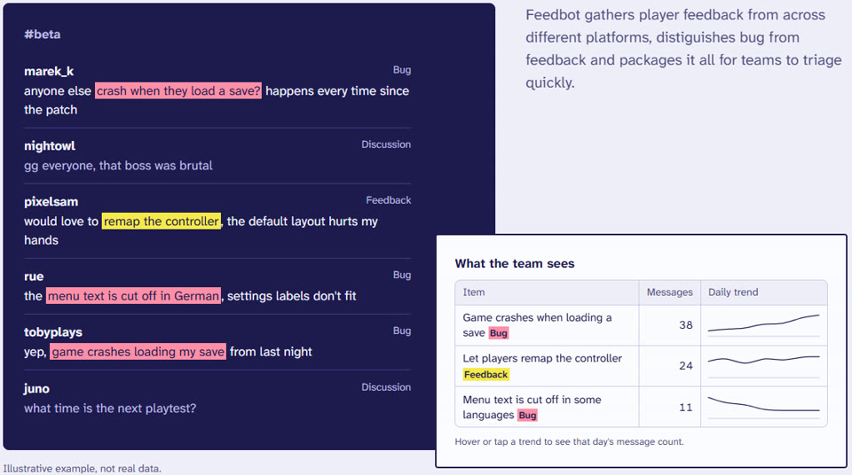
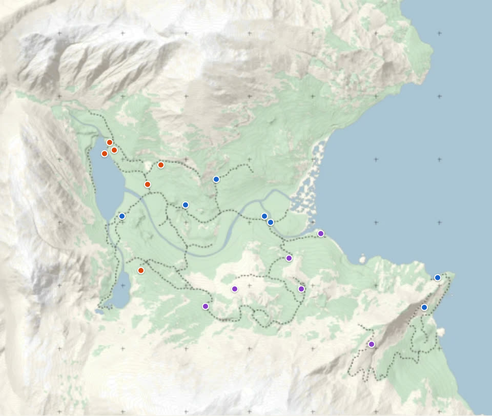

Feedbot

Launch week
- The app handled 45k player messages across multiple channels, feedback forums, reviews and internal bug reports, turning them into 60+ actionable bug and feedback reports.
- Given the pipeline's good contextual understanding the app can recognise when old bugs return and can also distinguish nuanced issues, I found it particularly interesting grouping reviews based off of the MAIN reason for their review, but still tracking remaining elements of the review and whether they happen to emotionally differ from the main body.

How it works
- A Discord bot pulls content from multiple channels and forums, while other bots aggregate reviews and internal bug reports.
- Message content is determined and categorised by an LLM, a second model tries to fit the message in previously grouped bugs and feedback before making new issues.

After 1.0
- After the app worked well with release message load, I built out Unity and Notion integration for the app. Now there's an in-Unity bug map, which takes developers straight to the bug location. The developers can then paste Notion tickets into the map to find all the locations pertaining to the issue.